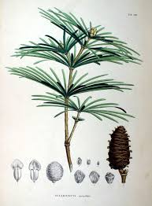

Sciadopityaceae
Japanese Umbrella-pine Family
Sciadopityaceae is a unique, monotypic conifer family containing only one living species, Sciadopitys verticillata, the Japanese Umbrella-pine or Koyamaki. Endemic to Japan, this evergreen tree represents an ancient and isolated lineage within the conifers (order Pinales), distinguished by its remarkable whorls of double-needle-like cladodes.
Overview
The Sciadopityaceae family is truly exceptional, consisting of just a single living species, Sciadopitys verticillata. This evergreen tree, known as Koyamaki or Japanese Umbrella-pine, is a conifer belonging to the order Pinales and class Pinopsida. It holds a unique and somewhat isolated position within the conifer evolutionary tree, representing a lineage with a fossil history stretching back well into the Mesozoic Era, earning it the status of a "living fossil".
Endemic to the cool, moist temperate forests of central and southern Japan (Honshu, Shikoku, Kyushu), Sciadopitys is instantly recognizable by its highly distinctive foliage: whorls of long, photosynthetic structures that resemble fused pairs of needles, radiating from the shoot tips like the ribs of an umbrella. These structures are technically cladodes (modified stems) rather than true leaves.
Valued for its unique appearance, slow growth, and durable wood, Sciadopitys verticillata is cultivated as an ornamental tree in parks and gardens worldwide, particularly in temperate climates. Its ancient lineage and unique morphology make it a subject of significant botanical and evolutionary interest.
Quick Facts
- Scientific Name: Sciadopityaceae
- Common Name: Japanese Umbrella-pine family
- Number of Genera: 1 (Sciadopitys)
- Number of Species: 1 (Sciadopitys verticillata)
- Distribution: Endemic to Japan
- Evolutionary Group: Gymnosperms - Conifers (Pinopsida - Pinales)
Key Characteristics
Growth Form and Habit
Sciadopitys verticillata is a slow-growing, long-lived evergreen tree that can eventually reach heights of 20-30 meters (sometimes more). It typically develops a dense, conical or pyramidal crown, especially when young. The bark is thick, soft, reddish-brown, and fibrous, exfoliating in long strips.
Leaves (Needles/Cladodes)
The foliage is the most distinctive feature and is unique among all living conifers. Two types of leaf structures are present:
- Scale Leaves: Small, brownish, non-photosynthetic scale-like leaves are sparsely arranged along the shoots.
- Cladodes: The prominent green "needles" are actually cladodes – modified, flattened photosynthetic stems that function as leaves. Each cladode resembles a pair of fused needles, being linear, 6-13 cm long, flattened but thick, flexible, dark green above, and marked with two whitish stomatal grooves below. These cladodes are arranged in dense whorls (verticils) of 10-30 at the ends of the annual shoots. They persist for 3-4 years.
Reproductive Structures (Cones)
The tree is monoecious, bearing separate male (pollen) and female (seed) cones on the same individual.
- Pollen Cones (Male): Small (6-12 mm long), composed of numerous spirally arranged microsporophylls. They are produced in dense, globose clusters (1-2 cm diameter) at the tips of shoots in spring.
- Seed Cones (Female): Ovoid-oblong, woody cones measuring 6-11 cm long and 4-6 cm wide. They are borne erect on short stalks and mature over two years, turning brown. The cones consist of numerous, spirally arranged, thick, woody, fan-shaped cone scales with a thickened apex. Each scale is subtended by a small, fused bract and bears 5-9 seeds on its upper surface.
Seeds
Seeds are oblong, somewhat flattened, about 8-12 mm long, with a narrow wing along each side that aids slightly in wind dispersal.
Wood
The wood is lightweight, soft, yellowish-white, straight-grained, fragrant, and resistant to decay. It has been used traditionally in Japan for construction, boat building, and cooperage.
Chemical Characteristics
Produces resins characteristic of conifers. Its specific chemical composition (terpenoids, etc.) helps distinguish it phylogenetically from other conifer families.
Field Identification
Identifying Sciadopitys verticillata is straightforward due to its absolutely unique foliage:
Primary Identification Features
- Foliage: The presence of dense whorls of long (6-13 cm), flattened, grooved, double-needle-like cladodes at the shoot tips is diagnostic. No other conifer possesses this feature.
- Habit: An evergreen tree with a generally conical shape (especially when younger).
- Cones: Look for the distinctive, erect, woody seed cones with thick, fan-shaped scales, or the dense terminal clusters of small pollen cones in spring.
Secondary Identification Features
- Bark: Thick, reddish-brown, fibrous bark shedding in strips.
- Growth Rate: Typically slow-growing.
- Origin: Wild populations are endemic to Japan; cultivated trees may be found elsewhere.
Seasonal Identification Tips
- Year-round: The unique evergreen cladodes make identification easy at any time.
- Spring: Look for the terminal clusters of pollen cones releasing yellow pollen.
- All Seasons (on mature trees): Seed cones in various stages of development (first-year green cones, second-year maturing/mature brown cones) may be present.
Common Confusion Points
- Pinus (Pines): Pines have true needles, typically in bundles (fascicles) of 2-5, surrounded by a basal sheath. They lack the whorled, flattened, grooved cladodes of Sciadopitys.
- Araucariaceae (e.g., Monkey Puzzle, Norfolk Island Pine): Some have whorled branches, but their leaves are broad scales or sharp, triangular structures, completely different from the cladodes. Cone structures are also vastly different.
- Other Conifers: While diverse, no other living conifer family possesses the characteristic whorled cladodes of Sciadopityaceae. This feature alone is sufficient for identification.
Field Guide Quick Reference
Look For:
- Evergreen tree
- Whorls of long, flattened, grooved, double-needle cladodes
- Woody seed cones with thick scales
- Reddish-brown fibrous bark
- Japanese origin (wild)
Key Distinctions:
- Unique cladodes (unlike any other conifer needles/leaves)
- Whorled arrangement of cladodes
- Cone structure distinct from pines, firs, etc.
Notable Examples
The Sciadopityaceae family is monotypic, represented by a single living species:

Sciadopitys verticillata
Koyamaki, Japanese Umbrella-pine
The sole surviving member of its ancient family, this unique conifer is endemic to Japan. It's a slow-growing evergreen tree recognized by its whorls of distinctive, long, green cladodes resembling umbrella ribs. It produces woody seed cones and is highly valued as an ornamental tree in temperate gardens globally for its unique form and texture.
Phylogeny and Classification
Sciadopityaceae represents a distinct and isolated lineage within the conifers (Division Pinophyta, Class Pinopsida, Order Pinales). It is a monotypic family, containing only the genus Sciadopitys with its single species S. verticillata. Fossil evidence indicates that this lineage was more diverse and widespread during the Mesozoic and early Cenozoic eras, highlighting its status as an ancient relict or "living fossil".
The precise phylogenetic placement of Sciadopityaceae relative to other extant conifer families has been debated, but molecular data generally places it outside the Pinaceae family. Often, it is resolved as the sister group to a large clade comprising the Cupressaceae (cypress family, including redwoods and junipers) and Taxaceae (yew family). Regardless of its exact sister group, it represents a long, independent branch in the conifer evolutionary tree, emphasizing its unique evolutionary history and morphological distinctiveness.
Position in Plant Phylogeny
- Kingdom: Plantae
- Division/Phylum: Pinophyta (Conifers)
- Class: Pinopsida
- Order: Pinales
- Family: Sciadopityaceae
Evolutionary Significance
The Sciadopityaceae family is highly significant for several reasons:
- Living Fossil: Represents a sole survivor of an ancient lineage dating back at least to the Jurassic period, offering a window into past conifer diversity.
- Unique Morphology: The development of photosynthetic cladodes arranged in whorls is unparalleled among living conifers, showcasing unique evolutionary pathways in vegetative structure.
- Isolated Phylogenetic Position: Its distinct place in the conifer tree highlights the deep evolutionary splits within the group and underscores its long period of independent evolution.
- Biogeographic Relict: Its endemism to Japan contrasts with a much wider past distribution indicated by the fossil record.